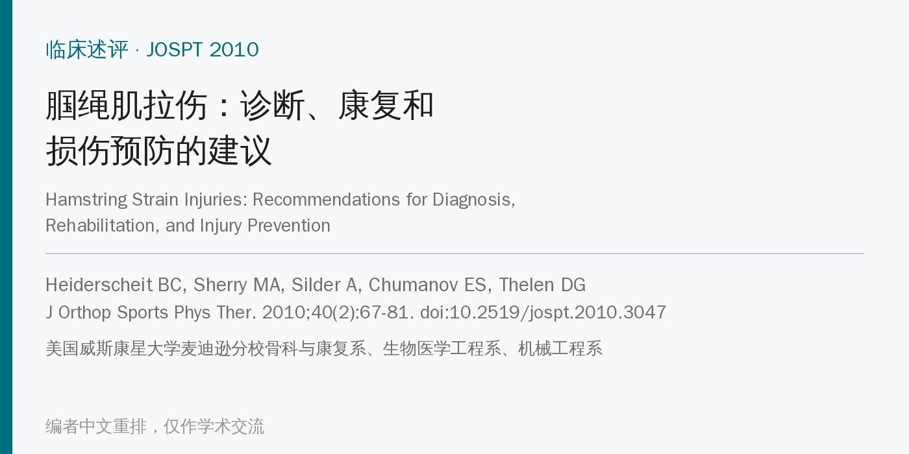
🔖原文信息（编者中文重排）
📚 文献信息
▪ Heiderscheit BC, Sherry MA, Silder A, Chumanov ES, Thelen DG. Hamstring Strain Injuries: Recommendations for Diagnosis, Rehabilitation, and Injury Prevention. J Orthop Sports Phys Ther. 2010;40(2):67-81. doi:10.2519/jospt.2010.3047
▪ 中文题目：腘绳肌拉伤：诊断、康复和损伤预防的建议
▪ 作者来自美国威斯康星大学麦迪逊分校骨科与康复系、运动医学中心、生物医学工程系和机械工程系，通讯作者 Bryan Heiderscheit
▪ 文章类型：临床述评（无系统检索），美国国家橄榄球联盟（NFL）医学慈善基金、美国国立卫生研究院等资助
• 腘绳肌拉伤在运动员中很常见，愈合慢、症状拖得久
• 约三分之一会复发，多在回到运动后第一年内，且回场后头 2 周风险最高；复发往往比第一次更重，停训时间可翻倍
• 复发率这么高，说明常用的康复方案可能没解决无力、组织延展性下降和动作模式改变，传统回场标准也可能太粗
• 这篇述评想回答三件事：急性腘绳肌拉伤怎么查、怎么分阶段康复和判断回场、以后研究和预防往哪走
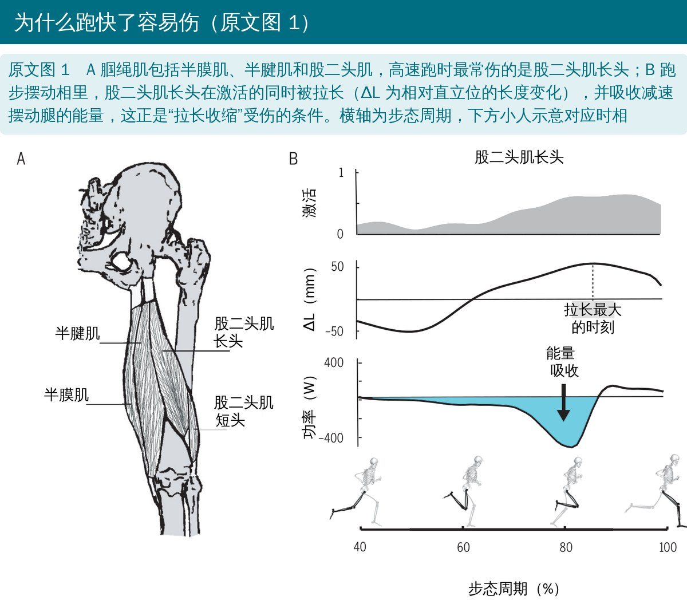
🔖原文图 1（图内英文已换成中文）
• 这不是原始研究：作者根据已有文献和自己团队的研究、临床经验，提出检查流程和三阶段康复指南
• 康复指南适用于 1、2 度拉伤，主要依据的是肌内肌腱和相邻肌纤维损伤（冲刺型）的文献；不适用于完全断裂、撕脱的术后康复
• 原文附有在线视频演示部分动作（本文未收录）
• 冲刺型：高速跑时在摆动相末期受伤，多伤股二头肌长头的肌内肌腱和相邻肌纤维；急性期看起来更重，但恢复较快
• 拉伸型：舞蹈、踢腿等屈髋 + 伸膝到极限时受伤，多伤半膜肌近端游离肌腱；症状轻，却要花长得多的时间才能回到伤前水平
• 恢复更慢的信号：累及近端游离肌腱、越靠近坐骨结节、MRI 上损伤越长越粗
• 但初诊时伤得重不重（查体或 MRI），预测不了会不会复发
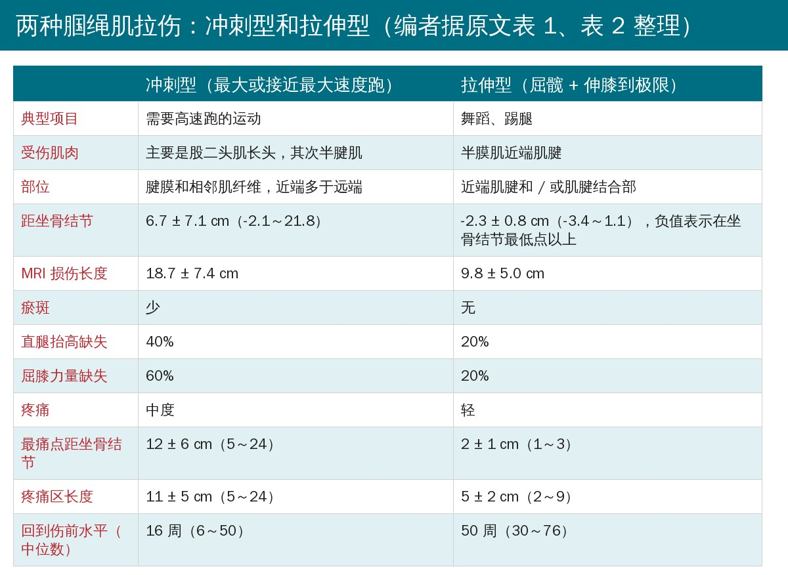
🔖编者据原文表 1、表 2 整理
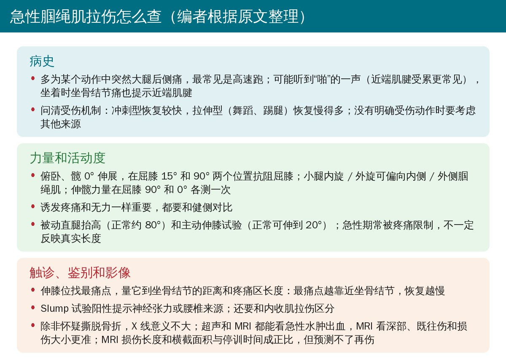
🔖编者根据原文整理
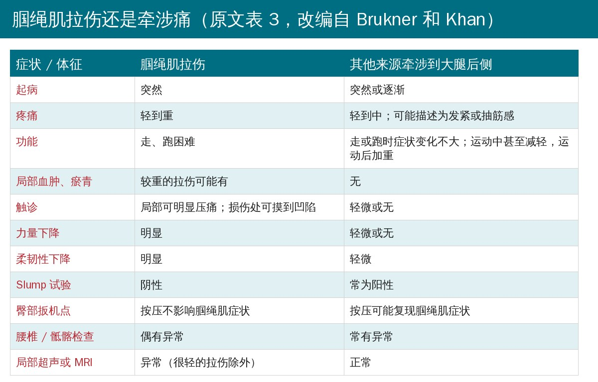
🔖原文表 3（编者翻译重排）
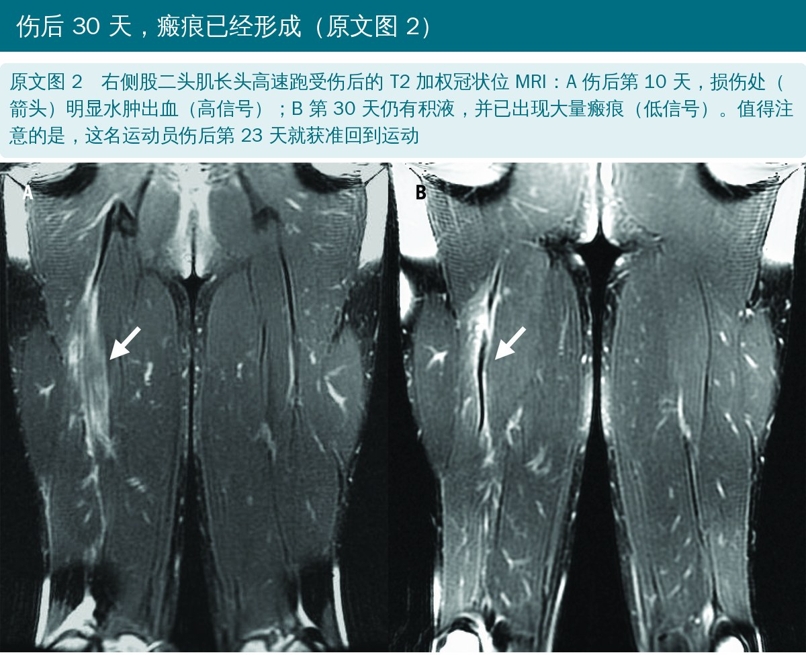
🔖原文图 2（图中只有分图字母和箭头，图注由编者翻译）
• 复发可能与三点有关：受伤肌肉持续无力、瘢痕导致肌腱单元延展性下降、受伤后动作模式改变；伤前就有的危险因素（腰盆肌力和控制差、股四头肌紧）也要一并处理
• 瘢痕比肌肉硬，会让力量峰值出现在更短的肌肉长度；离心训练可以把峰值推回更长的长度，理论上能降低再伤
• Sherry 和 Best 的研究：渐进敏捷和躯干稳定训练（PATS）比牵伸加力量训练（STST）复发少得多，回场 2 周时 0% vs 55%，1 年时 8% vs 70%
• 牵伸对预防和恢复的作用不明确；Slump 试验阳性时可加神经松动；超声、按摩等缺乏证据
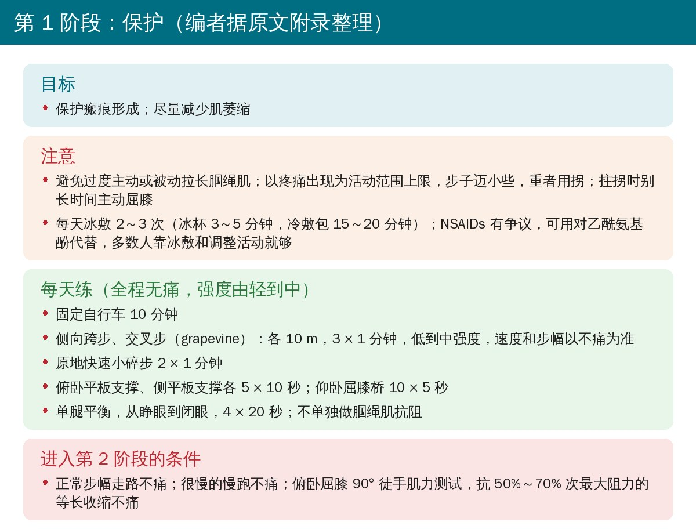
🔖编者据原文附录整理
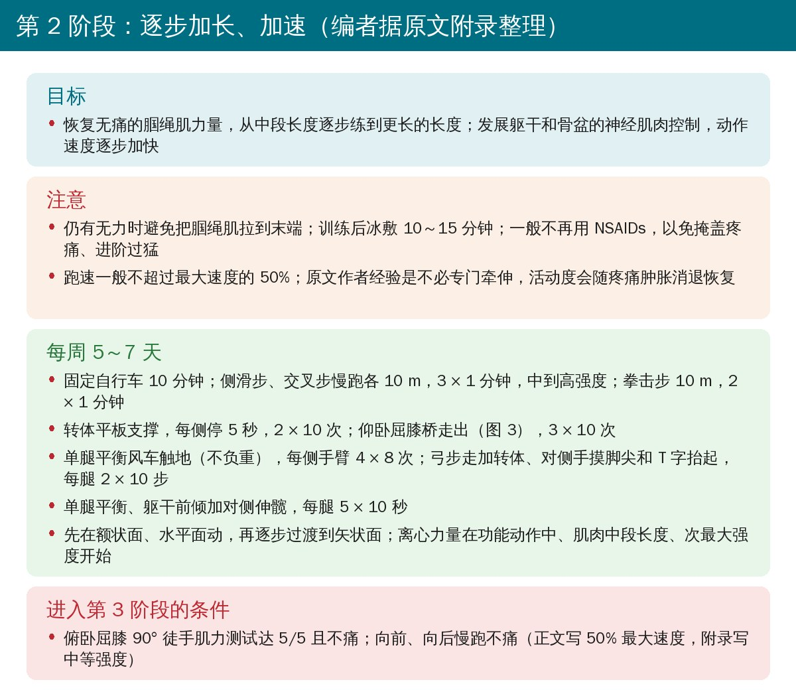
🔖编者据原文附录整理
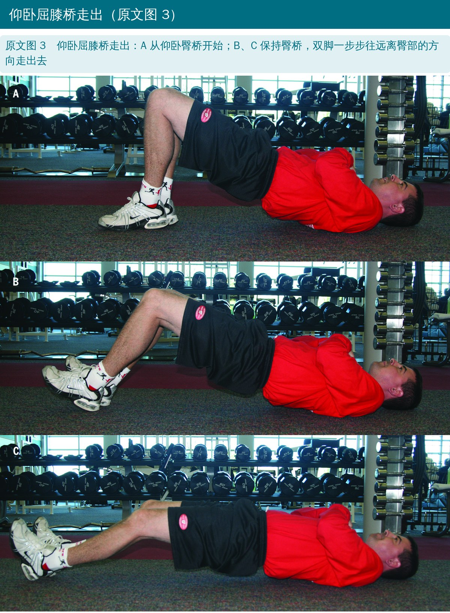
🔖原文图 3（照片内只有分图字母，图注由编者翻译）
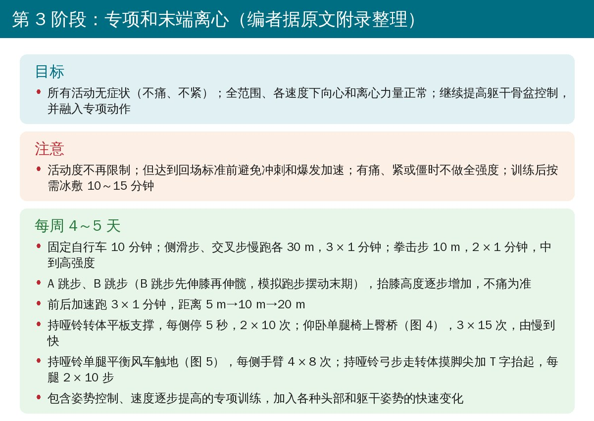
🔖编者据原文附录整理
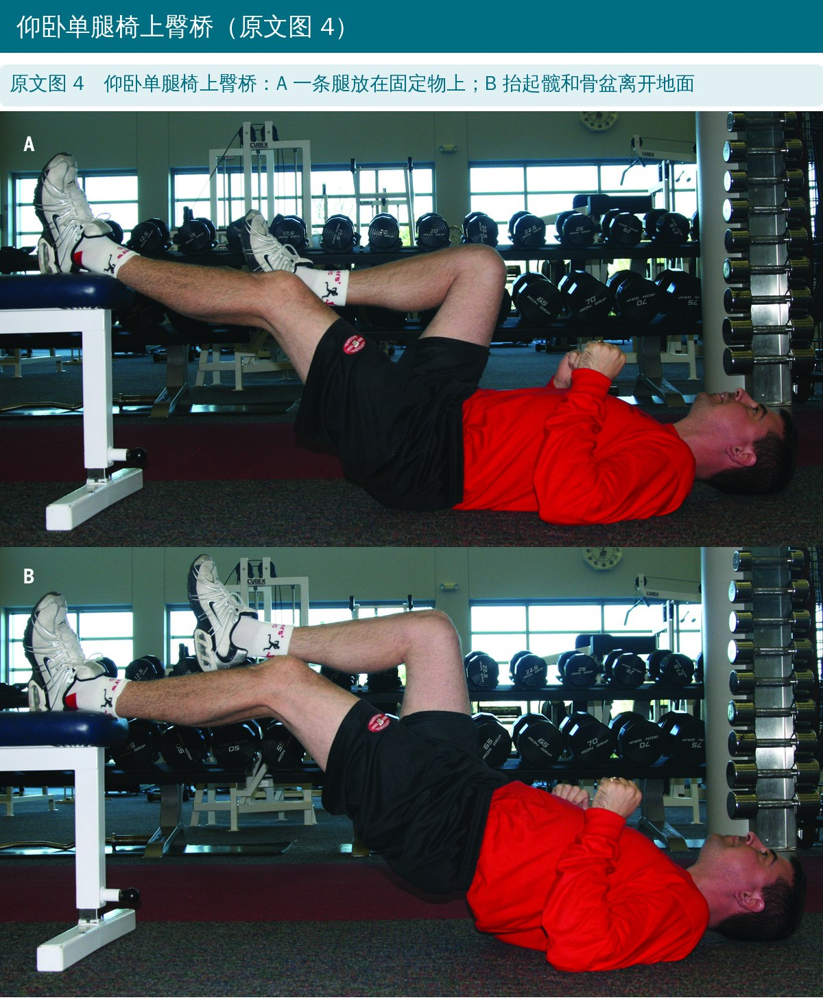
🔖原文图 4（照片内只有分图字母，图注由编者翻译）
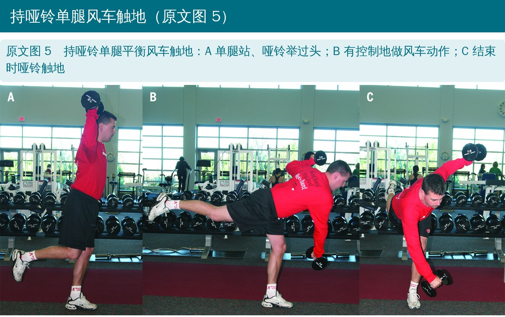
🔖原文图 5（照片内只有分图字母，图注由编者翻译）
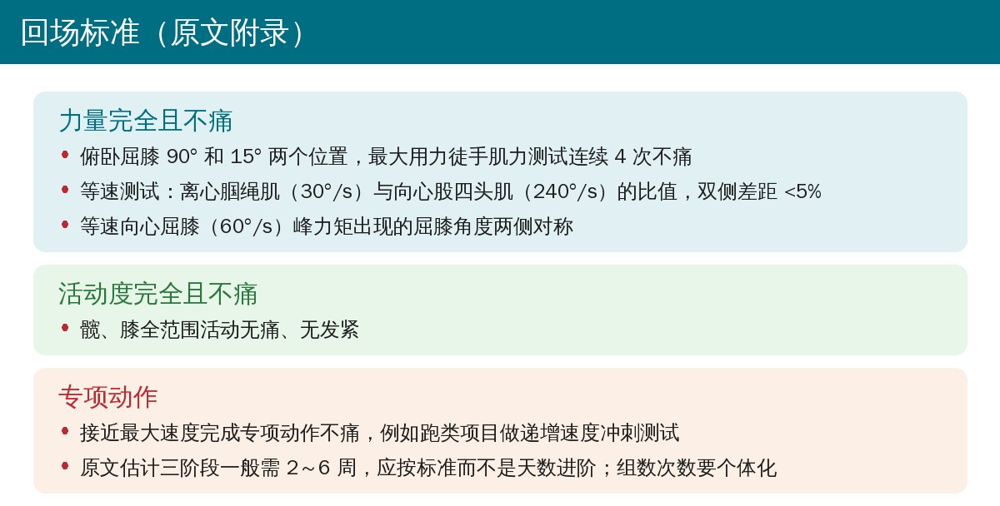
🔖原文附录（编者翻译重排）
• 常用的“活动度、力量、跳跑变向都不痛”太笼统：疼痛和僵硬一般 1～2 周就消失，但组织修复和再伤风险可能再持续数周
• 作者团队的研究：13 名已无痛、恢复全量运动的股二头肌拉伤运动员，伤后数月仍可见股二头肌长头萎缩、短头代偿性肥大和瘢痕，但跑步时的关节运动和肌电并没有一致的双侧差异
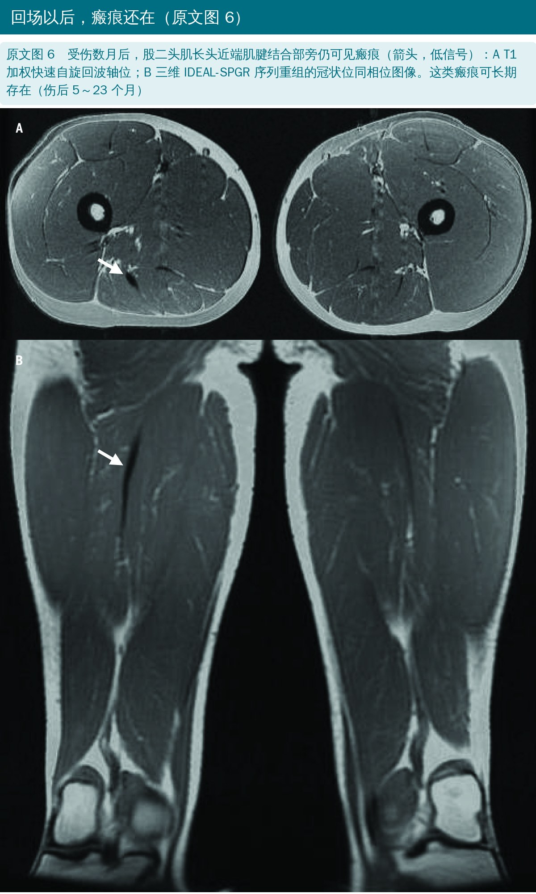
🔖原文图 6（图中只有分图字母和箭头，图注由编者翻译）
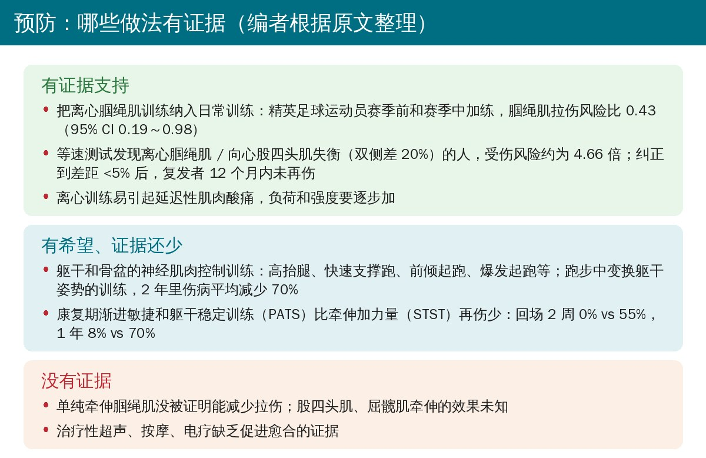
🔖编者根据原文整理
• 腘绳肌拉伤要从多方面评估：局部和邻近肌肉的力量、髋膝活动度都要查；受伤机制和损伤位置决定预后
• 康复要以神经肌肉控制和离心力量为重点，按标准而不是按天数进阶，才能既安全回场又降低复发
• 未来要研究：按损伤类型（尤其近端游离肌腱）定制的康复、能预测再伤的回场指标（如离心力量、峰力矩角度、动态 MRI），以及更大规模的预防研究
• 这是 2010 年的临床述评：没有系统检索，三阶段方案和回场标准是作者的建议，本身没有经过试验验证；组数、次数也是示例，原文要求个体化
• 关键证据样本很小：PATS 与 STST 的对比来自一项 24 人的小研究（编者注），复发率 0% vs 55% 这样的悬殊差距需要谨慎看待；冲刺型和拉伸型的数据也来自 Askling 等两组十几人的研究（编者注）
• “走完方案”不等于“完全恢复”：附录说三阶段一般 2～6 周，而表 2 冲刺型回到伤前水平的中位数是 16 周，读者容易把“走完方案”误当成“完全恢复”
• 回场标准依赖设备：离心 / 向心等速比值和峰力矩角度需要等速测试仪，多数基层机构做不到；“<5% 双侧差距”的界值来自一项复发运动员研究，而该研究里也有 31% 的复发者力量正常
• 后来的证据有更新：本文发表后，北欧腘绳肌离心训练（Nordic）的预防证据、Askling 的“L 方案”等陆续出现，可以作为补充（编者观点）
• 方向依然可信：重视损伤类型、强调离心和躯干骨盆控制、按标准进阶，与之后的研究和共识大体一致（编者观点）
• 瘢痕持续时间前后不一：正文说 13 名运动员是在伤后 5～19 个月接受 MRI，图 6 图注却写瘢痕持续“伤后 5～23 个月”
• 第 2 阶段进阶条件两处写法不同：正文是“以 50% 最大速度向前、向后慢跑不痛”，附录是“中等强度向前、向后慢跑不痛”
• “4 倍”和 4.66：正文写离心 / 向心失衡使受伤“风险比增加 4 倍”，括号里给的风险比是 4.66；同处还把 confidence interval 误写成 confidence internal
• 峰力矩角度的测试速度：正文只说两侧屈膝峰力矩角度应相近，附录才写明是 60°/s 向心测试
• “没有证据”的说法偏绝对：正文说按摩对拉伤后愈合“没有证据”、治疗性超声“似乎无益”，引用的多是健康人或动物研究
• 先问清怎么伤的：冲刺型和拉伸型预后差别很大，拉伸型（舞蹈、踢腿、近端肌腱）要提前讲清可能需要大半年
• 查体量化：屈膝 15° 和 90° 两个角度测力、记录最痛点到坐骨结节的距离，作为基线和进阶依据
• 早期就动，但别拉长：第 1 阶段在无痛范围内练躯干骨盆和平衡，不做单独腘绳肌抗阻；有无力时避免末端拉长
• 按标准进阶、按标准回场：没有等速仪时，至少做到屈膝 15° 和 90° 最大用力连续 4 次不痛、接近最大速度的专项动作不痛
• 回场后继续练：瘢痕和萎缩可能持续数月，离心训练和躯干控制训练应继续作为预防
原文附录（节选） 腘绳肌急性拉伤康复指南的进阶条件
| 阶段 | 训练频率 | 进入下一阶段 / 回场的条件 |
|---|---|---|
| 第 1 阶段 | 每天 | 正常步幅走路不痛；很慢的慢跑不痛；俯卧屈膝 90° 抗 50%～70% 阻力等长收缩不痛 |
| 第 2 阶段 | 每周 5～7 天 | 俯卧屈膝 90° 徒手肌力 5/5 且不痛；中等强度向前、向后慢跑不痛 |
| 第 3 阶段 | 每周 4～5 天 | 力量完全且不痛（屈膝 90° 和 15° 最大用力连续 4 次不痛；离心腘绳肌 30°/s 与向心股四头肌 240°/s 比值双侧差 <5%；60°/s 屈膝峰力矩角度两侧对称）；活动度完全不痛；接近最大速度的专项动作不痛 |
原文附录注：组数、次数应个体化；三阶段一般约需 2～6 周，但应按标准逐个患者进阶。表 1～表 3 的内容见正文中的整理卡片
欢迎关注悦美力公众号，获取更多物理治疗的专业知识！
📄参考文献：
Heiderscheit BC, Sherry MA, Silder A, Chumanov ES, Thelen DG. Hamstring Strain Injuries: Recommendations for Diagnosis, Rehabilitation, and Injury Prevention. J Orthop Sports Phys Ther. 2010;40(2):67-81. doi:10.2519/jospt.2010.3047（PubMed Central 作者稿 PMC2867336）
本文为中文解读，仅作学术交流：原文图 1～图 6 引自原文，其中图 1 的英文由编者替换为中文，其余照片和 MRI 内只有分图字母和箭头；损伤类型对照、检查要点、三阶段康复、回场标准和预防卡为编者根据原文整理。原文版权归 JOSPT 所有，原文图 1A、图 6 另经 Springer 授权转载。